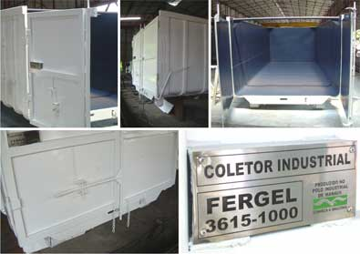
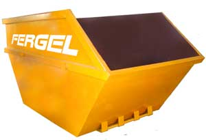
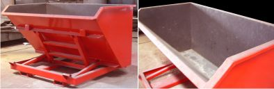
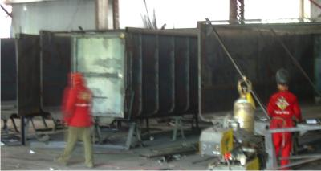

|
Os "Depósitos Metálicos de
Resíduos", também conhecidos como coletores de resíduos industriais
da Fergel, são adequados para quaisquer tipos de resíduos. São
fabricados com aço certificado e da melhor qualidade do
mercado. Os coletores de resíduos da Fergel podem receber
acabamento para diversos tipos de tratamento: contra a
corrosão atmosférica, químicos e corrosivos.
Mais que resíduos
Os coletores metálicos da Fergel
podem ser utilizados em diversas outras situações de
transporte – nas áreas da metalurgia, na construção civil,
agricultura, mineração e muitos outros. A Fergel também
oferece sistemas especiais de transporte para coletores e
depósitos roll-on / roll-off e poliguindastes.
>>>
Coletores industrias apresentam características apropriadas
para escoamento de refugos de matéria prima e são construídos
de qualquer tamanho e com sistema de remoção.

Os coletores
industriais da Fergel podem ser
fabricados com aço especial contra as intempéries e
seguindo qualquer especificação especial conforme as
necessidades do cliente.

>>>
Caçambas de entulho apresentam dimensões adaptáveis a pequenos
espaços e são facilmente removidas para despejo.
Depósito
Intercambiável de Exclusão de Resíduos - DIER
O DIER é um
depósito de pequenas proporções ideal para coleta de resíduos
em áreas estreitas de difícil acesso – especialmente indicado
para plantas industriais. Possui sistema de encaixe para
deslocamento por encaixe de empilhadeiras e despejo rápido. A
utilização do Depósito Intercambiável de Exclusão de Resíduos
da Fergel garante facilidade da manutenção na área de produção
da empresa.

Atualizações e reformas
Todo equipamento metálico pode
sofrer desgaste com o tempo de uso, especialmente coletores de
resíduos antigos que já passaram por intensos períodos de uso,
especialmente quando destinados à captação de resíduos que
podem oxidar o metal, ou simplesmente pelas adversidades
atmosféricas. Coletores de resíduos nestas condições
comprometem o aspecto visual da empresa e corroboram na
desorganização desse ambiente interno.
A Fergel Indústria e Comércio fabrica e
"REFORMA e RECONDICIONA" coletores de resíduos industrias e caçambas de entulho
de todos os tipo e tamanhos.

|